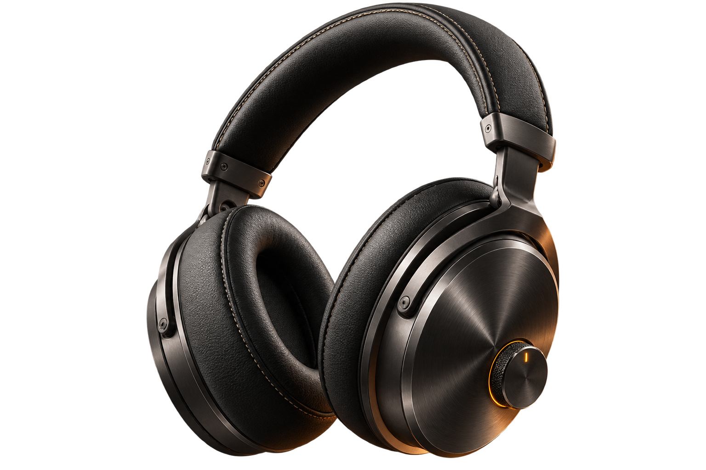

P1
La imagen ancla: crea tu producto o parte de uno real
 ChatGPT 5.6 SolGPT Image 2
ChatGPT 5.6 SolGPT Image 2Todo lo que viene después depende de esta única imagen. Dos caminos según tu caso: si no tienes producto, lo inventas de cero; si ya vendes algo real, partes de una foto tuya, aunque sea de móvil. En AMPER, esta imagen salió como parte del mismo prompt que la home (P2): aquí se separa para que puedas generarla sola.
Qué adjuntar (Prompt 1)Nada. Es el único camino que parte de cero.
Create a premium studio product photo of "AMPER A-01", a pair of over-ear wireless headphones. Brushed dark gunmetal metal and stitched black leather, with a glowing amber dial (volume/EQ), bevelled edges, realistic inset shadows and controlled highlights that communicate real materials, not flat icons. Floating in a deep charcoal/black void, single warm amber rim light wrapping the object. No stock photography, no people, no props, no text or logos. 3/4 angle, sharp focus.

📸 Pendiente: sube aquí la imagen ancla
Qué adjuntar (Prompt 2)tu propia foto del producto real: vale una foto de móvil, no hace falta que sea buena
Using the attached reference photo of my product, recreate it as a premium studio product photo: floating in a deep charcoal/black void, single warm amber rim light wrapping the object, sharp focus, realistic materials preserved exactly as in the reference. Do not redesign the product — only change the studio treatment, lighting and background. No stock photography, no people, no props, no text or logos.
Mismo resultado que el Prompt 1, pero anclado a tu producto real en vez de inventado. El resto del recorrido (P2 en adelante) es idéntico a partir de aquí.